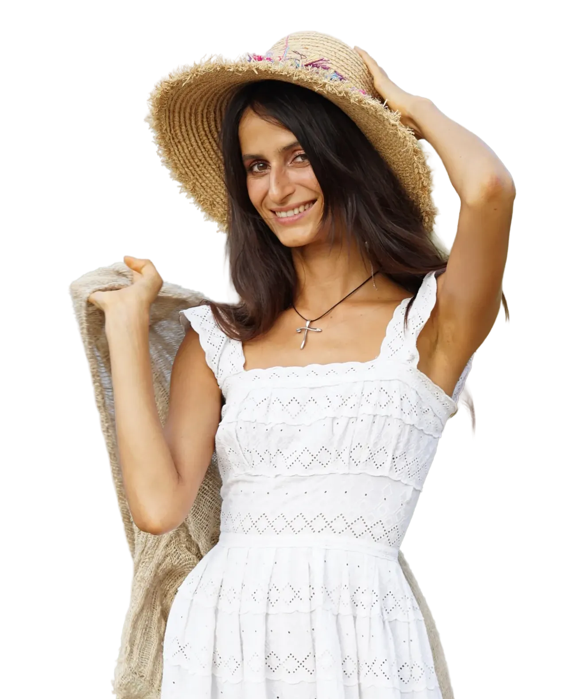
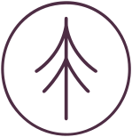
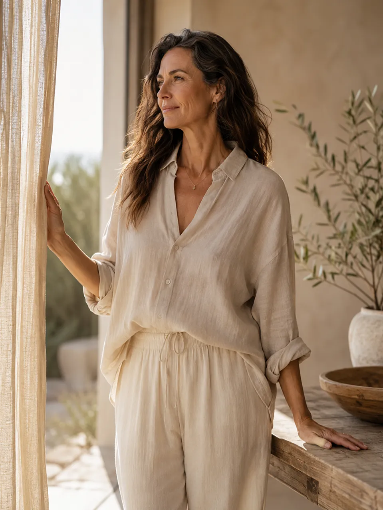
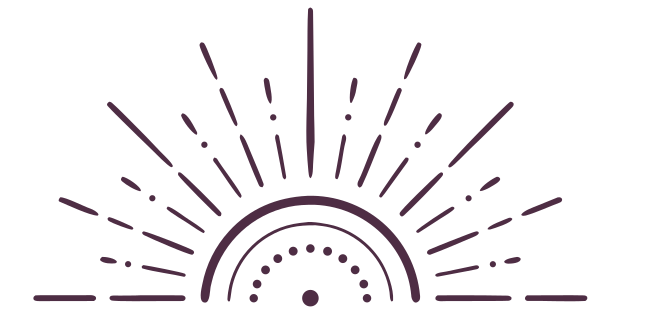
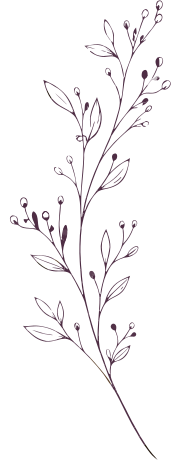
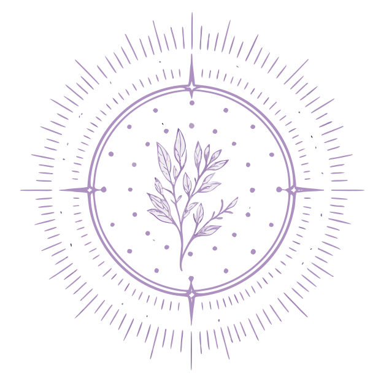
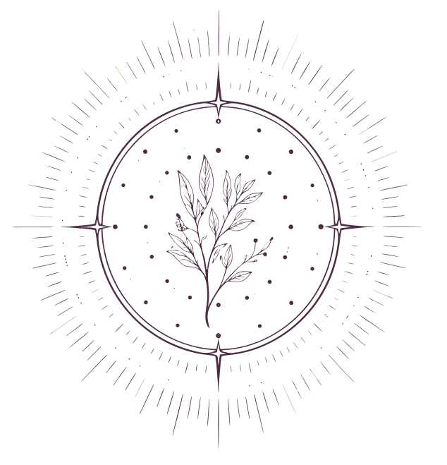

ВЕДАНИЕ: гормональный возраст 35+, 45+, 55+
«Гормональный возраст» — программа, которая возвращает телу его настоящий ритм, а не тот, что навязан стрессом, возрастом и средой.

Знаете, что меня возмущает больше всего? Женщина приходит с отёками, с раздражительностью, с тем, что цикл скачет как хочет, — и слышит одно и то же:
«Анализы в норме». Три слова. И на этом всё — разбирайтесь сами.А дальше — косметолог говорит про возраст. Психолог — про стресс. Гинеколог смотрит только на цикл, эндокринолог — только на щитовидку. Каждый видит свой кусок.
НИКТО НЕ СМОТРИТ НА ВСЮ КАРТИНУ ЦЕЛИКОМ.
12 лет я работаю с женщинами 35+, 45+, 55+. И вот что я вижу постоянно: то, что называют «возрастом», — почти всегда гормональный сбой.
И это поправимо!
Менопауза, кортизол, щитовидка, эстроген — я работаю со всем этим как с одной темой, потому что в теле это всё напрямую связано между собой.
Я сделала раздел пространства ВЕДАНИЕ «Гормональный возраст» именно для этого.
Без «попейте витаминки, зайдите через полгода». С системой. С регулярной поддержкой. Такое пространство, где не только тепло, но и всегда можно получить поддержку профессионалов. Это не просто система знаний. Это система регулярных практических действий.
Маленькими шагами можно прийти к большим результатам, не так ли?
Помните, какой была Ваша энергия раньше?
Цикл, который приходил вовремя, а не как лотерея каждый месяц. Лицо с утра — а не одутловатость, которую приходится маскировать хайлайтером.
Среда забирает этот баланс постепенно: стресс, недосып, токсическая нагрузка, естественная перестройка яичников и щитовидки с возрастом.
Гормональный возраст — не цифра в паспорте.
Это состояние Вашей эндокринной системы прямо сейчас.
И на него можно влиять — в 35, в 45, в 55.

Наташа Сведовая
Автор неповторимых женских программ, виталист, сертифицированный нутрициолог, натуропат, остеопракт, телесно-ориентированный терапевт, преподаватель йоги и йогатерапии, исцеляющей тантры, гипнотерапевт. Специалист по детоксу и природному питанию.
12 лет в природном оздоровлении. 20 000 учеников по всему миру.
Основатель школы Urban Queen, бренда натуральных продуктов Priroda и ретрит-центра Shivari в Таиланде.
Автор уникальных методик восстановления здоровья для женщин, мужчин и детей.

САМОДИАГНОСТИКА
Узнай себя:
0 из 6
Три и больше — ты пришла по адресу

Что такое «Гормональный возраст»?
Это не отдельный курс и не разовый марафон. Это надстройка над «Веданием»: всё, что уже есть в тарифе Основа, — плюс отдельная линия работы специально с гормональной системой женщины 35+, 45+ и 55+.
Один месяц =
+ одна тема для гормонального здоровья и микро-курс, протоколы
+ один экспресс-курс для очищения организма, протоколы
+ еженедельная онлайн практика для гормонов
+ еженедельная практика для молодости лица
+ ежедневный контент по текущей теме в группе поддержки
+ опорные вебинары.
Внутри пространства «ВЕДАНИЕ»
Всё из тарифа Основа
Ежемесячный курс поэтапного восстановления целостности организма — фундамент, без которого гормональная система не может работать стабильно (подробно — в блоке ниже).
Еженедельная практика для лица
Работа с костями черепа, фасциями, связками, мышцами, подкожным слоем и кожей. Не косметический массаж, а телесно-ориентированная работа с тканями лица — то, что действительно меняет то, как ты выглядишь и ощущаешь себя.
Еженедельный уходовый рецепт
Природный рецепт для лица или тела каждую неделю — то, что можно сделать своими руками, без химии и лишних трат.
Еженедельная гормональная практика
Короткая практика (дыхание, телесная работа, техники снижения кортизола) — специально под гормональный фон недели.
Цикл авторских уроков по гормональному балансу
Постоянный доступ ко всем прошедшим темам — не теряешь ничего, к чему уже прикоснулась.
Ежемесячный 7-дневный экспресс-курс
Короткий интенсив каждый месяц с фокусом на конкретную гормональную тему — можно пройти даже в самый загруженный месяц.

Ежемесячные темы «Гормонального возрождения»
Вступаешь один раз — и идёшь по программе месяца вместе с сообществом. Здесь — только гормоны, менопауза и всё, что с ними связано. Общее восстановление тела — в тарифе Основа.
«Менопауза без лекарств»
«Кортизол: гормон стресса, лицо и вес»
«Щитовидная железа: главный гормональный дирижёр тела»
«Эстроген: кожа, память, кости»
«Прогестерон, тревога и сон»
«Либидо и женская чувствительность после 40»
Вступаете один раз — и идете по программе месяца вместе с сообществом.
Внутри резидентства «Гормональный возраст»
Тариф Основа
Всё содержание тарифа Основа: поэтапное восстановление целостности организма.
Пространство резидента
Закрытое пространство в Telegram для резидентов «Гормональный возраст».
Одна тема в месяц
Один месяц — одна большая гормональная тема.
Практика для лица
Еженедельная онлайн-практика для лица: кости черепа, фасции, связки, мышцы, кожа.
Уходовый рецепт
Еженедельный уникальный уходовый рецепт.
Гормональная практика
Еженедельная гормональная практика.
Авторские уроки
Цикл авторских уроков по восстановлению гормонального баланса в постоянном доступе.
7-дневный экспресс-курс
Ежемесячный 7-дневный экспресс-курс поддержания гормонального баланса.
Поддержка
Поддержка кураторов и наставников.
Живое комьюнити
Живое комьюнити женщин 35+, 45+ и 55+.
Встреча при входе
Личная встреча с куратором при входе в резидентство.
Личный кабинет
Кабинет с базой знаний, курсами и протоколами.

Как устроена «Основа»: год поэтапного восстановления
В «Ведании Основа» мы не пытаемся «оздоровить всё и сразу». Каждый месяц — один слой тела, с которым мы работаем целенаправленно. Без хаоса. Через год пройден полный круг восстановления целостности организма.
Микробиом и кишечник
Вздутие, тяга к сладкому, кожа, иммунитет — всё начинается здесь.
Печень
Гормоны, кожа, энергия после еды. Главный фильтр, которому давно нужна помощь.
Осеннее антипаразитарное очищение
Полная программа очищения организма от паразитарной нагрузки с поддержкой пищеварения и восстановления.
Антигрибковое очищение и активация иммунитета
Программа противогрибкового очищения, восстановления микрофлоры и укрепления естественной защиты организма.
Обмен веществ и тяга к сладкому
Почему в конце года так тянет на сахар — и как поддержать метаболизм без диет и запретов.
Детокс после праздников
Мягкое восстановление после нагрузки на организм в конце года.
Сердечно-сосудистая система
Поддержка сосудов и сердца — фундамент энергии и долголетия.
Суставы, кости и опорно-двигательная система
Подвижность и лёгкость тела как основа хорошего самочувствия.
Кожа и весеннее обновление
Коллаген, увлажнение и обновление кожи после зимы — изнутри, а не только кремом.
Лимфатическая система и отёки
Работа с застоем и отёчностью перед летним сезоном.
Энергия и подготовка к лету
Финальный этап годового цикла — тело в тонусе и готово к активному сезону.
Антипаразитарное очищение
Всё содержание тарифа Основа: поэтапное восстановление целостности организма.
Пространство для тех, кто больше не хочет списывать самочувствие, лицо и настроение на «просто возраст»
Большинство женщин пытаются решить эти вопросы хаотично: то к косметологу, то к эндокринологу, то очередной крем. Но гормональная система работает системно — и заботиться о ней нужно так же.